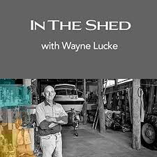

Kallee Buchanan
In The Shed Podcast
I collaborated with Creative Regions to visit the sheds of 17 men from Childers, Apple Tree Creek, Cordalba, Farnsfield, Burnett Heads and Bundaberg to find out what their shed meant to them
Episode 1: Wayne Lucke
Imagine having to go to work every day in the building that was the scene of an accident that changed your life, and the life of your granddaughter, forever.
Episode 2: Pat Scanlan

As an army intelligence officer, Pat Scanlan spent 30 years travelling the world working on top secret missions in active warzones, all after losing a leg in Vietnam. His shed has provided a refuge to process what he went through but also a place to rebuild.
Episode 3: Trevor Walden

Trevor Walden has always been a positive man, but six years ago that was tested when he was given six months to live, and his pilot's licence was taken from him. He discusses how his shed helped him overcome the hard times and to fly again.
Episode 4: Norm Quarrell

Norm Quarrell's trade has served him well - it got him his start in the Army and in teaching, and now gives him a way to connect with his family. He talks about how his shed is helping him pass on his carpentry skills to inspire an entirely new generation.
Episode 5: Matt Griffiths

Matt Griffiths describes himself as 'coming in kit form,' but his artificial leg hasn't stopped him travelling the world to help others, and he puts it all down to what he calls 'number 8 wire mentality.' He talks about how fixing things in the shed has inspired relief efforts in Kathmandu, flood recovery work, and some special father-son time.
Episode 6: Terry Byrne

Terrence Byrne's shed is a place of work and pleasure - it's the resting place for his wines and ports, but also where he seeks solace when his football team is losing.
Episode 7: Peter Anderson

Macadamia nut farmer Peter Anderson discusses how his shed is the base of operations for his orchard, and will one day be the high-tech hub of his farm.
Episode 8: Mark Weiss

Mark Weis has followed machinery around the world, working in Sudan, Cuba and Indonesia fixing farm equipment. He describes how it helped him appreciate his Aussie shed, even though he's happy to close the door on it from time to time.
Episode 9: John and Matt Russo

For Matt and John Russo cane farming is in their blood and everyday on the farm starts in the shed.
Episode 10: Joe Menich

For 30 years, Joe Menich has tinkered with engines in his shed, even building a full-size train and railway in it.
Episode 11: Jock Gardener

Navy veteran Jock Gardener has always had a shed in which he could 'follow his nose' around and perform any task. He reveals how being a jack-of-all-trades has brought him comfort through tough times, but he's giving it up to be closer to the grandkids.
Episode 12: Ian Glenwright

Artist Ian Glenwright has a couple of sheds, but the place he feels most relaxed is a corner of his wide, Queenslander style verandah where he sits, paints and watches his pigeons fly home.
Episode 13: Graham (Ric) Richter

When Ric Richter was in an accident that stopped him doing a lot of the things he loved, he found a pathway back to health working in his shed.
Episode 14: Ed Murray

Ed Murray spends a lot of time alone in the shed, but he says it's not about isolation. He explores how men often find a way through their problems working together or alone on something else in the shed.
Episode 15: Dr Ian Holthouse

Dr Ian Holthouse spends his days taking care of patients in his GP practice, but at home, it's all about the shed. He reveals why he opens his shed to men who no longer have one of their own, and how the buildings bring men, and their families, together.
Episode 16: Darren Enslin

Darren Enslin's skill as a champion shooter brought him and his family to Australia, where he has found a passion for beekeeping. He explores the two halves of himself represented by his two sheds: one where he sits in quiet contemplation making ammunition for the sport he loves, and the other literally abuzz with honey production.
Episode 17: Angelo La Rocca

For much of Angelo La Rocca's life as a farmer the shed was a place of work, where machinery was mended and stored. He reflects on how in his retirement, he's become focussed on preserving the history of farming practice still surviving on his property.